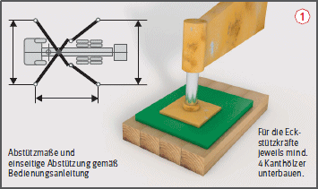
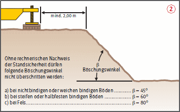
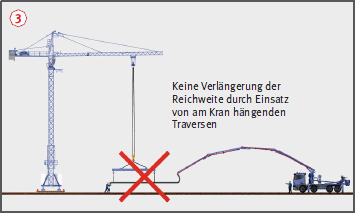
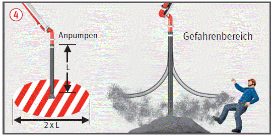
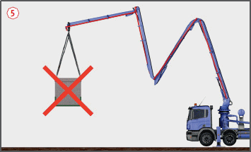
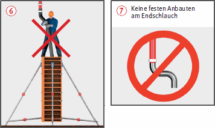
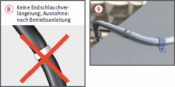
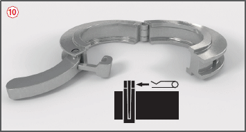

.
. .
.
Betonpumpen und Verteilermaste |


Aufstellung
..Betrieb
 . Betriebsanleitung des Herstellers beachten.
. Betriebsanleitung des Herstellers beachten. .
. . Weiterführende Förderleitungen dürfen den Mast nicht zusätzlich belasten.
. Weiterführende Förderleitungen dürfen den Mast nicht zusätzlich belasten. .
. und Verlängerungen
und Verlängerungen  an Endschläuchen.
an Endschläuchen. Hebelkupplungen mit Splint sichern
Hebelkupplungen mit Splint sichern  .
.





07/2021